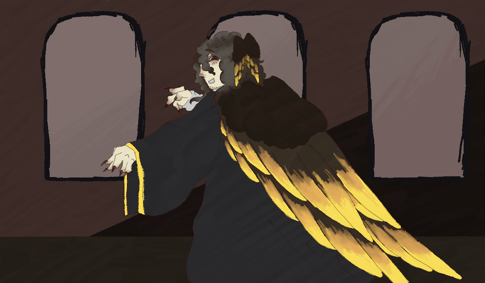

L'attente

L'homme revient, entrant avec vous dans la pièce de l'autre côté des portes. Devant vous se trouve un être dôté d'ailes grandioses, qui vous accueil avec fierté.

L'homme revient, entrant avec vous dans la pièce de l'autre côté des portes. Devant vous se trouve un être dôté d'ailes grandioses, qui vous accueil avec fierté.